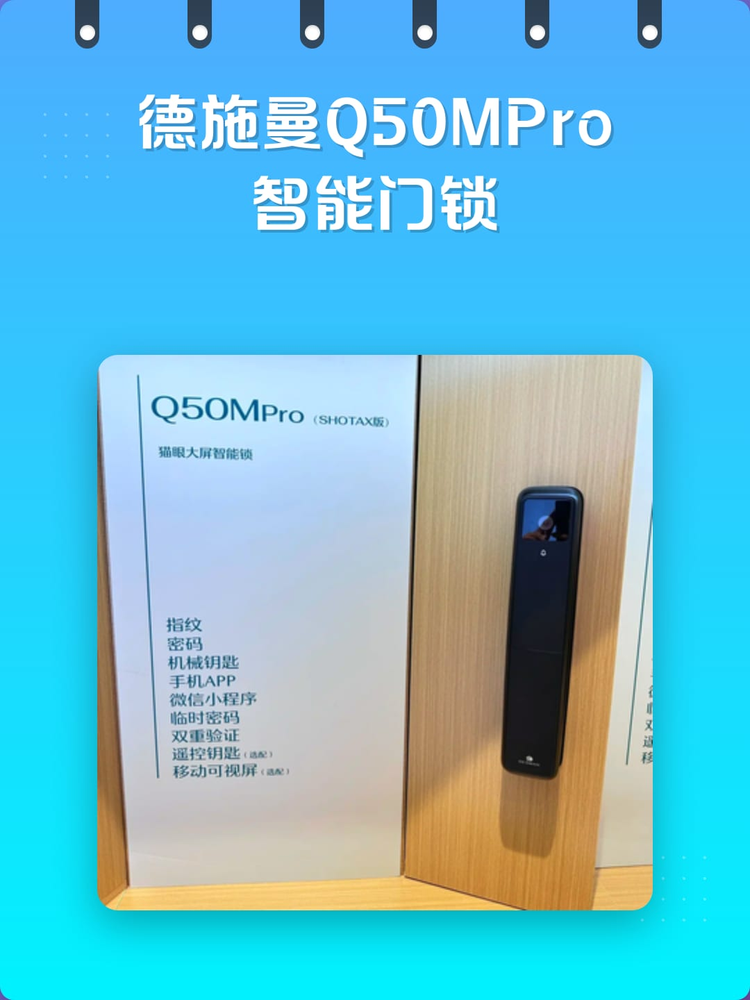

德施曼 Q50F Pro

德施曼旗舰级全自动智能门锁，3D 人脸识别配合大容量锂电池，Wi-Fi 直连无需额外网关即可远程管理。德施曼在门锁领域积累深厚，机械结构与安全性口碑扎实，适合看重锁体品质与人脸开锁的家庭。
客观评测
德施曼 Q50F Pro 采用全自动锁体与 C 级锁芯，机械结构与安全设计延续品牌在门锁领域的积累。3D 人脸识别配合半导体指纹构成双识别体系，实测约 1 秒内完成解锁，暗光楼道可用。联网支持 Wi-Fi 直连，无需网关即可远程查看门锁状态、下发临时密码，告警涵盖防撬、试错与门虚掩。约 6000mAh 锂电池（约）支撑 4-6 个月，Type-C 可应急供电。
主观点评
装修换锁时对比了好几款，最后看中德施曼的锁体手感：关门那一下干脆利落，自动上锁声音也很扎实。人脸识别在走廊灯没开的时候照样好使，比摸黑按指纹舒服。App 虽然不算好看，但远程发临时密码、看开门记录这些实用功能都在。给电池充电是这锁的日常功课，好在频率不高。不在意生态联动、更看重锁本身素质的话，Q50F Pro 是稳妥的选择。
优点与不足
- 锁体机械结构扎实，全自动上锁可靠
- Wi-Fi 直连免网关，远程管理方便
- 人脸加指纹双识别，全家适用
- 生态联动偏封闭，米家/华为用户跨平台有限
- 锂电池充电期间需用应急方式开门（约）
参数规格
| 开锁方式 | 3D 人脸识别、指纹、密码、APP、临时密码、应急钥匙 |
|---|---|
| 人脸识别 | 3D 人脸识别模块，支持暗光环境（约） |
| 指纹识别 | 半导体指纹识别，识别率约 99%（约） |
| 电池 | 约 6000mAh 锂电池（约），续航约 4-6 个月 |
| 锁芯 | C 级锁芯 |
| 联网 | Wi-Fi 直连 + 蓝牙 |
| 锁体 | 全自动锁体，关门自动上锁（约） |
| 安全 | 防撬报警、试错锁定、门虚掩提醒 |
| 应急供电 | Type-C 应急供电 |
| 告警 | 低电量、撬锁、试错多路远程推送（约） |
| 门铃 | 内置电子门铃 |
| 安装 | 适配主流防盗门，含上门安装（约） |